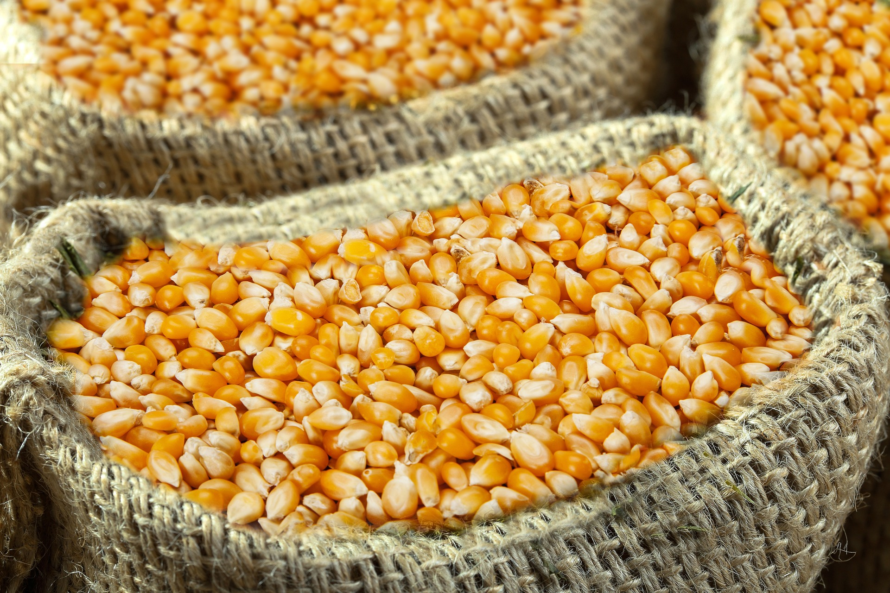
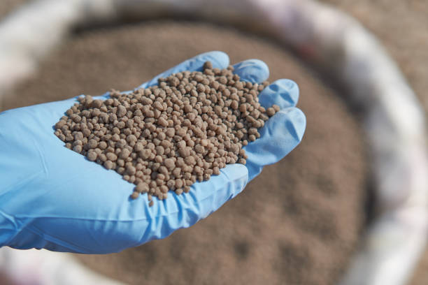

Quelques annonces
Découvrez les produits agricoles disponibles près de chez vous.
100 kg
Manioc frais
Disponible à Cotonou. Produit frais de qualité, récolté localement.

50 kgSemences de maïs
Disponible à Parakou. Semences sélectionnées pour un rendement optimal.

25 kgEngrais NPK
Disponible à Abomey. Engrais de qualité pour améliorer la productivité agricole.
 80 kg
80 kg
Tomates fraîches
Disponible à Porto-Novo. Tomates fraîches récoltées directement auprès des producteurs locaux.